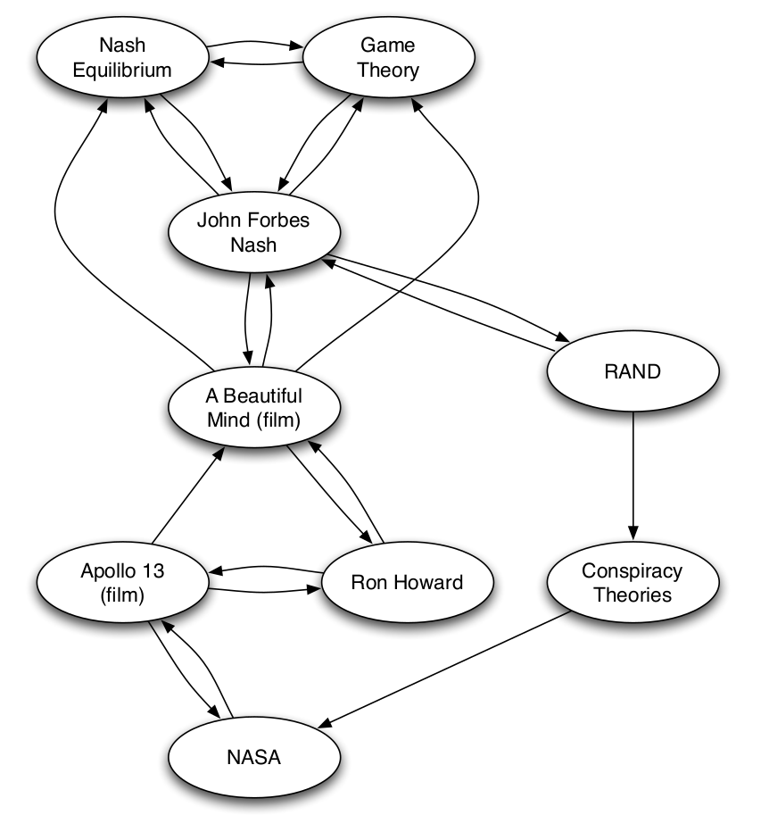

AR - Lesson 17
World Wide Web
Se stai leggendo questi appunti certamente hai usato (e sai usare) il Web.
Il Web è un'appicazione sviluppata da Tim Berners-Lee nel periodo 1989-1991 per consentire alle persone di condividere informazioni tramite internet.
L'architettura del web è di tipo client-server e il suo funzionamento può essere descritto in due principi:
- delle informazioni sono salvate su delle macchine server e resi disponibili tramite internet sotto forma di pagine web.
- un'applicazione client (per esempio un browser) richiede tali pagine Web pubblicamente accessibili.
Questa in sintesi è la struttura fisica del web.
Ciò che è interessante è invece l' organizzazione logica delle pagine web. Le pagine web possono referenziare in maniera diretta altre pagine web, tramite dei riferimenti o link. Perciò possiamo pensare al web come un grafo diretto in cui i nodi sono le pagine web, e gli archi sono i riferimenti tra una pagina e un'altra. Per questo motivo una pagina web viene anche detta ipertesto.
Precursori dell'ipertesto
Un primo precursore intelletuale del concetto di ipertesto è il concetto di reference.
Negli articoli o nei libri, quando si necessità indirizzare a informazioni supplementari o semplicemente citare il proprietario intelletuale di una informazione, si fanno dei riferimenti ad altri libri o articoli.
Anche in questo caso si crea un grafo diretto i cui nodi sono i libri o gli articoli e gli archi sono i riferimenti.
La differenza sostanziale però con l'ipertesto è la linea temporale nella quale si fanno i riferimenti.
Se un libro X fa una citazione a un articolo Y vuol dire che Y è stato scritto e pubblicato prima di X, perciò non ci potranno essere riferimenti ad X nell'articolo Y.
Invece nel rete del Web abbiamo degli archi bidirezionali, ovvero capita spesso di trovare due pagine che si referenziano reciprocamente.
Un altro precursore dell'ipertesto sono le cosidette crossing-references, o riferimenti incrociati. Tale tipo di organizzazione la troviamo per esempio in una enciclopedia, e consente di collegare argomenti differenti attraverso una catena di collegamenti semantici o riferimenti tra altri arogmenti.

Figura 1: Cross-references.